日期数据类型
学习目标
- 能够使用 pandas 来处理日期时间类型数据
1. Python 的 datetime 对象
Python 内置了datetime 对象，可以在 datetime 库中找到
from datetime import datetime
# 获取当前时间
t1 = datetime.now()
t1
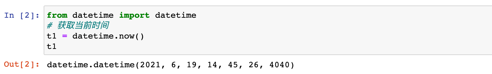
还可以手动创建 datetime：
t2 = datetime(2020, 1, 1)
t2

两个 datetime 数据可以相减：
diff = t1 - t2
print(diff)

# 查看两个日期相间的结果类型
print(type(diff))

2. pandas 中的数据转换成 datetime
pandas 可以使用 to_datetime 函数把数据转换成 datetime 类型
1）加载 country_timeseries.csv 数据，并查看前5行的前5列数据
ebola = pd.read_csv('./data/country_timeseries.csv')
ebola.iloc[:5, :5]

注：从数据中看出 Date 列是日期，但通过info查看加载后数据为object类型
ebola.info()
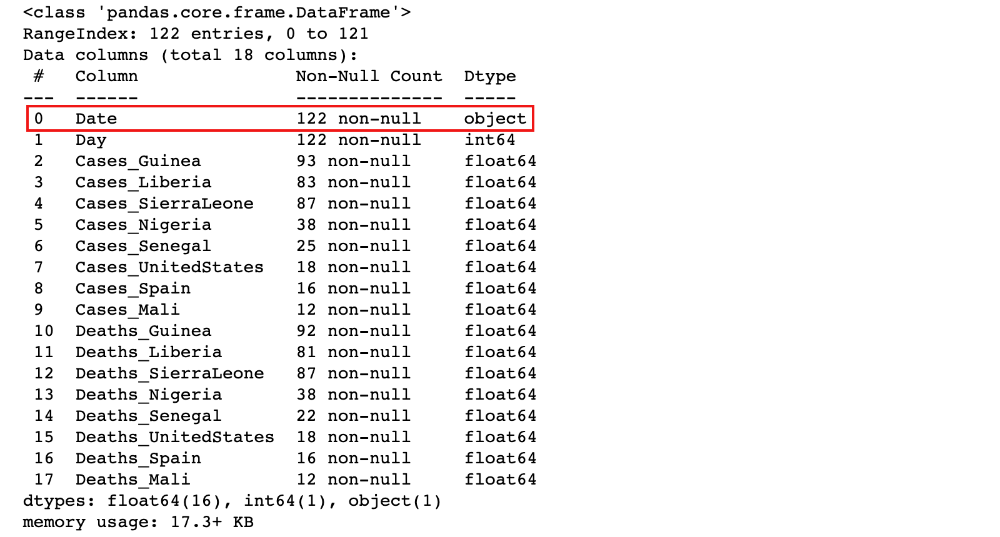
3）可以通过 pandas 的 to_datetime方法把 Date 列转换为datetime，然后创建新列
ebola['Date_Dt'] = pd.to_datetime(ebola['Date'])
ebola.info()

4）如果数据中包含日期时间数据，可以在加载的时候，通过parse_dates参数指定自动转换为 datetime
# parse_dates 参数可以是列标签或列的位置编号，表示加载数据时，将指定列转换为 datetime 类型
ebola = pd.read_csv('./data/country_timeseries.csv', parse_dates=[0])
ebola.info()
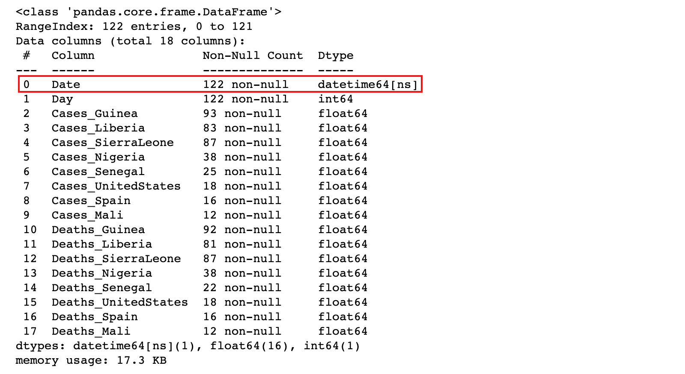
3. 提取 datetime 的各个部分
1）获取了一个 datetime 对象，就可以提取日期的各个部分了
dt = pd.to_datetime('2021-06-01')
dt

可以看到得到的数据是Timestamp类型，通过Timestamp可以获取年、月、日等部分
dt.year
dt.month
dt.day

除了获取 Timestamp 类型的年、月、日部分，还可以获取其他部分，具体参考文档：https://pandas.pydata.org/pandas-docs/stable/user_guide/timeseries.html#time-date-components
2）通过 ebola 数据集的 Date 列，创建新列 year、month、day
# 注意：dt是日期类型的Series对象的属性，用于对Series中的日期数据操作，比如提取日期各个部分
ebola['year'] = ebola['Date'].dt.year
ebola['year']

ebola['month'] = ebola['Date'].dt.month
ebola['day'] = ebola['Date'].dt.day
ebola[['Date','year','month','day']].head()

ebola.info()
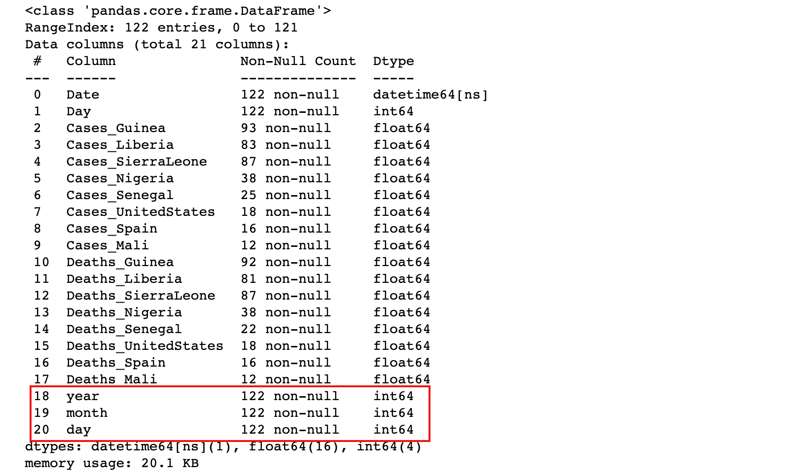
4. 日期运算和Timedelta
Ebola 数据集中的 Day 列表示一个国家爆发 Ebola 疫情的天数。这一列数据可以通过日期运算重建该列
1）获取疫情爆发的第一天
# 获取疫情爆发的第一天
ebola['Date'].min()
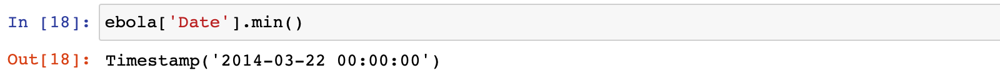
结果说明：疫情爆发的第一天（数据集中最早的一天）是2014-03-22
2）计算疫情爆发的天数时，只需要用每个日期减去这个日期即可
ebola['outbreak_day'] = ebola['Date'] - ebola['Date'].min()
ebola[['Date', 'Day', 'outbreak_day']]

ebola[['Date', 'Day', 'outbreak_day']].tail()

3）执行这种日期运算，会得到一个timedelta对象
ebola.info()
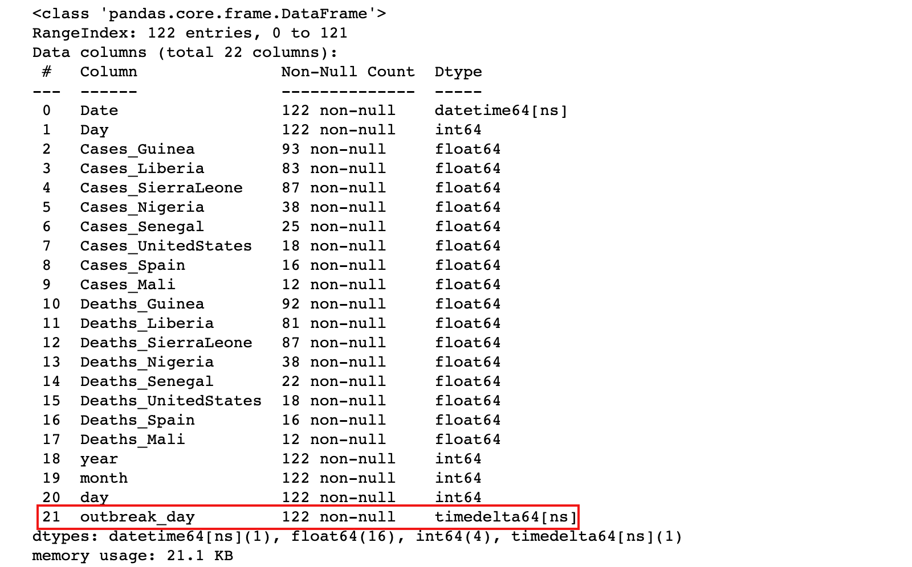
5. 日期范围
包含日期的数据集中，并非每一个都包含固定频率。比如在ebola数据集中，日期并没有规律
ebola_head = ebola.iloc[:5, :5]
ebola_head

从上面的数据中可以看到，缺少2015年1月1日，如果想让日期连续，可以创建一个日期范围来为数据集重建索引。
1）可以使用 date_range 函数来创建连续的日期范围
head_range = pd.date_range(start='2014-12-31', end='2015-01-05')
head_range
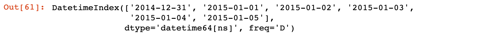
2）对于 ebola_head 数据首先设置日期索引，然后为数据重建连续索引
ebola_head.index = ebola_head['Date']
ebola_head

ebola_head.reindex(head_range)
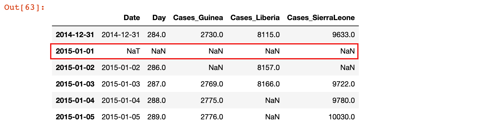
使用date_range函数创建日期序列时，可以传入一个参数freq，默认情况下freq取值为D，表示日期范围内的值是逐日递增的
# 产生 2020-01-01 到 2020-01-07 的工作日
pd.date_range('2020-01-01', '2020-01-07', freq='B')

结果说明：从结果中看到生成的日期中缺少1月4日，1月5日，为休息日
freq 参数的可能取值：
| Alias | Description |
|---|---|
| B | 工作日 |
| C | 自定义工作日 |
| D | 日历日 |
| W | 每周 |
| M | 月末 |
| SM | 月中和月末（每月第15天和月末） |
| BM | 月末工作日 |
| CBM | 自定义月末工作日 |
| MS | 月初 |
| SMS | 月初和月中（每月第1天和第15天） |
| BMS | 月初工作日 |
| CBMS | 自定义月初工作日 |
| Q | 季度末 |
| BQ | 季度末工作日 |
| QS | 季度初 |
| BQS | 季度初工作日 |
| A, Y | 年末 |
| BA, BY | 年末工作日 |
| AS, YS | 年初 |
| BAS, BYS | 年初工作日 |
| BH | 工作时间 |
| H | 小时 |
| T, min | 分钟 |
| S | 秒 |
| L, ms | 毫秒 |
| U, us | microseconds |
| N | 纳秒 |
3）在 freq 传入参数的基础上，可以做一些调整
# 隔一个工作日取一个工作日
pd.date_range('2020-01-01', '2020-01-07', freq='2B')

4）freq 传入的参数可以传入多个
# 示例：2020年每个月的第一个星期四
pd.date_range('2020-01-01','2020-12-31',freq='WOM-1THU')

# 示例：2020年每个月的第三个星期五
pd.date_range('2020-01-01','2020-12-31',freq='WOM-3FRI')

6. 日期序列数据操作
6.1 DateTimeIndex 设置
1）加载丹佛市报警记录数据集 crime.csv
crime = pd.read_csv('./data/crime.csv', parse_dates=['REPORTED_DATE'])
crime

crime.info()

2）设置报警时间为行标签索引
crime = crime.set_index('REPORTED_DATE')
crime

# 查看数据信息
crime.info()

6.2 日期数据的筛选
注：把行标签索引设置为日期对象后，可以直接使用日期来获取某些数据
根据日期各部分进行数据筛选：
1）示例：获取 2016-05-02 的报警记录数据
crime.loc['2016-05-02']

2）示例：获取 2015-03-01 到 2015-06-01 之间的报警记录数据
crime.loc['2015-03-01': '2015-06-01'].sort_index()

3）时间段可以包括小时分钟
crime.loc['2015-03-01 22': '2015-06-01 20:35:00'].sort_index()
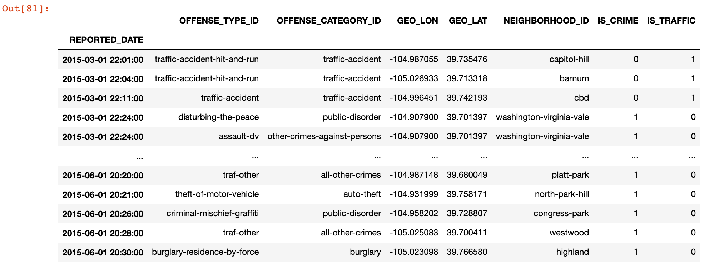
4）示例：查询凌晨两点到五点的报警记录
crime.between_time('2:00', '5:00')
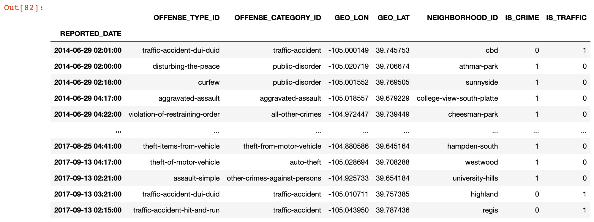
5）示例：查询在 5:47 分的报警记录
crime.at_time('5:47')

DateTimeIndex 行标签排序：
在按日期各部分筛选数据时，可以将数据先按日期行标签排序，排序之后根据日期筛选数据效率更高。
坑点：
- 数据按照 DateTimeIndex 行标签排序之前，只能使用 df.loc[...] 的形式根据日期筛选数据，但排序之后，可以同时使用 df.loc[...] 或 df[...] 的形式根据日期筛选数据
1）示例：获取 2015-03-04 到 2015-06-01 之间的报警记录数据
# 数据按照 DateTimeIndex 行标签排序之前
%timeit crime.loc['2015-03-04': '2016-06-01']

# 数据按照 DateTimeIndex 行标签排序之后
crime_sort = crime.sort_index()
%timeit crime_sort.loc['2015-03-04': '2016-06-01']

结论：数据按照 DateTimeIndex 行标签排序之后，根据日期筛选数据效率更高
日期序列数据的重采样：
对于设置了日期类型行标签之后的数据，可以使用 resample 方法重采样，按照指定时间周期分组
1）示例：计算每周的报警数量
# W：即Week，表示按周进行数据重采样
weekly_crimes = crime_sort.resample('W').size()
weekly_crimes
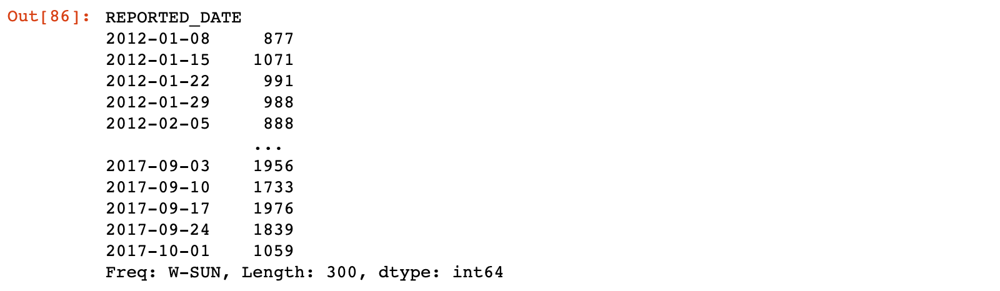
# 也可以把周四作为每周的结束
crime_sort.resample('W-THU').size()
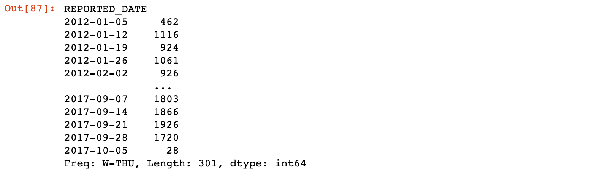
# pandas 绘图
%matplotlib inline
import matplotlib.pyplot as plt
# Windows 操作系统设置显示中文
plt.rcParams['font.sans-serif'] = 'SimHei'
# Mac 操作系统设置显示中文
# plt.rcParams['font.sans-serif'] = 'Arial Unicode MS'
weekly_crimes.plot(figsize=(16, 8), title='丹佛报警记录情况')

2）示例：分析每季度的犯罪和交通事故数据
# Q：Quarter，表示按季度进行数据重采样
crime_quarterly = crime_sort.resample('Q')['IS_CRIME', 'IS_TRAFFIC'].sum()
crime_quarterly
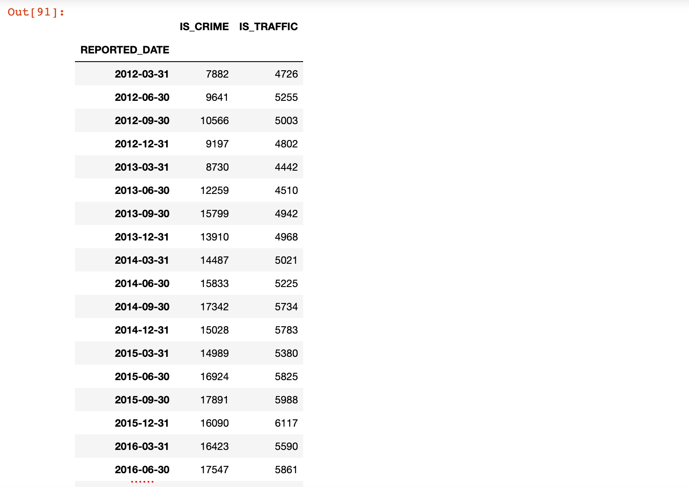
所有日期都是该季度的最后一天，使用QS生成每季度的第一天
crime_quarterly = crime_sort.resample('QS')['IS_CRIME', 'IS_TRAFFIC'].sum()
crime_quarterly
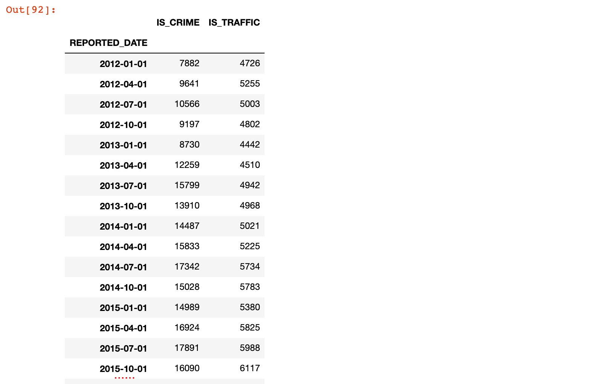
# pandas 绘图
crime_quarterly.plot(figsize=(16, 8))
plt.title('丹佛犯罪和交通事故数据')

总结
- pandas 中，datetime64用来表示时间序列类型
- datetime64类型可以做差，返回的是timedelta类型
- 时间序列类型的数据可以作为行标签索引，对应的数据类型是DatetimeIndex类型
- 转换成时间序列类型后，可以按照时间的特点对数据进行处理
- 提取日期的各个部分（月，日，星期...)
- 进行日期运算
- 按照日期范围筛选数据